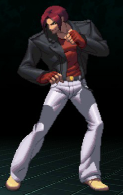
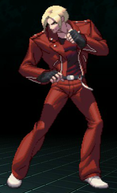
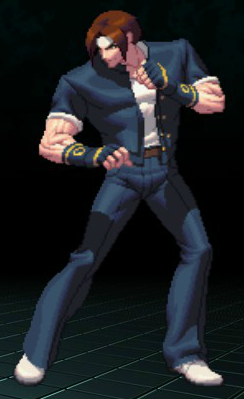
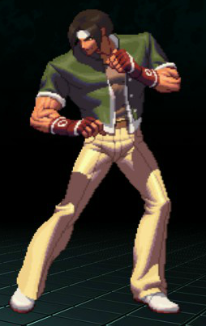
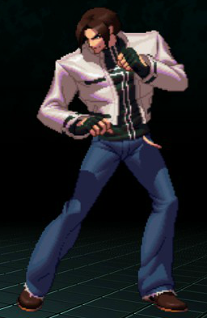
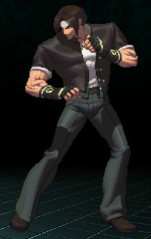
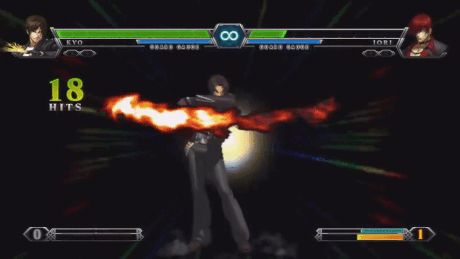

Their Flames Ain't Jack
Compared To Mine!" Name Kyo Kusanagi Titles Scion of the Flame Nicknames Flamer Age 20 (December 12) Height 5'11.5" (181cm) Weight 165 lbs (75kg) Species Human Thermokinetic Gender Male Blood Type B (RH-)Orientation Heterosexual Occupation Kusanagi Clan Leader Likes Motorcycles, Ice Hockey, Broiled Fish, Poetry, Fire Puns Dislikes Effort towards shit he REALLY doesn't care aboutStatus Active, Single Personality Kyo is an overconfident but well-meaning young man, more interested in enjoying life than having to partake in any particular responsibilities. He is quick to dismiss subjects that don't interest him and will often carry out his actions with a devil-may-care attitude. Despite his seemingly arrogant and rude demeanor, he treasures his friends and family, enjoying their presence greatly. His extreme disinterest in studies has led to his chronic inability to graduate from high school. Kyo takes his clan's responsibilities on a more personal level, disregarding ancient legends and predestined events as any reason for his actions. His strong sense of justice and his zeal to fight stronger opponents are what he believes to drive him to carry out his destiny. Routine Kyo lives in Japan, and whenever he’s not participating in the King of Fighters tournament he often spends his time either handling his clan duties or slacking off on his schoolwork - or just plain not attending and wandering around finding better things to do. That’s not to say he is dim-witted - he actually has a rather sharp mind, and simply dislikes dealing with what he sees to be unnecessary work. When he’s not trapped in school he’s off riding his bike or playing ice hockey - in spite of being a pyrokinetic, he’s pretty good at it. He also enjoys writing poetry, and happens to be very proud of it - however, most regard his works to be rather... bad. Kyo thinks they’re just crazy.
- Saisyu Kusanagi
[Father] - Shizuka Kusanagi
[Mother] - Souji Kusanagi
[Cousin] - Aoi Kusanagi
[Cousin]
- Benimaru Nikaido
- Goro Daimon
- Shingo Yabuki
- K'
- Chizuru Kagura
Acquaintances
Rivals/Enemies
- Iori Yagami
- Orochi
- Ash Crimson
- Rugal Bernstein
When humankind had yet to scratch the surface of their potential, there existed a guardian deity of mother Gaia - Yamata no Orochi, the eight-headed serpent deity. As Her Will, Orochi was born from the earth, manifested through the floating emotions of the denizens of the lands and substances of nature. Granted with many of Her powers, Orochi gained many followers amongst humankind, eventually forming a group of followers - the eight strongest of whom were known as the Hakkesshu. Over time, as humankind began to grow in numbers and sought to learn more of the realm within which they lived, the natural balance of the world began to crumble - and it was at this time that Orochi’s tolerance for Her desecration dissipated, and he sought the complete annihilation of all humankind. Nearly two millennia ago, using Her powers purely as a means for chaos, Orochi and his clan set upon the world of humans and waged war with them, the struggle going on for a great many centuries - however, it was through the combined efforts of three human clans that Orochi was defeated, sealed deep within the earth with three mythical treasures.
False ProphetKyo is a descendant of one of these clans, as was his father before him and those before his father. At the age of 15, he surpassed his father in both pyrokinetic ability and fighting prowess, and became his clan’s new leader. Some few years later, after the completion of his training, Kyo competed in a preliminary held in Japan to determine the members of the country's representative team in the upcoming King of Fighters tournament. He defeated both of the members that would become a part of his team, and became the team’s leader - as well as eventually befriending the two. Reaching the finals, they met and fought Rugal Bernstein, a powerful fighter that boasted his desire to fight equally powerful opponents. After his defeat, he blew up his ship in attempt to bring the Japan team with him - but the team escaped unharmed.
Kyo and his team are invited to another King of Fighters tournament, organized once again by Rugal whom survived his craft's self-destruction. This time, Rugal also brainwashed Kyo's missing father, Saisyu, into attacking his son. Kyo's father regained his senses after he was subdued by the team, and to counter the team's strength Rugal challenged them with power sapped from Orochi. However, Rugal's body was overwhelmed by the power's immensity and he was disintegrated after trying to tap too much into it power. Pleased with his son's prowess, Saisyu leaves unnoticed, entrusting the clan's duty to Kyo.
Heavenly KingsPrior to the events of the third tournament, a man named Goenitz challenges Kyo to a fight. Kyo accepts, powered by his overwhelming confidence in his fists, only to be defeated soundly by his challenger and sent to the hospital. In spite of his injuries, his anger and spirit from his loss drove him to invent powerful new techniques, and he enters the year's tournament to prove his strength to his unknown attacker. In the tournament's finals, he meets the host of the tournament and the younger heiress of the Yata clan, Chizuru Kagura. At the tournament's end, he vanquishes Goenitz with the aid of Chizuru and Iori - the third descendant of the clans that had sealed Orochi, and Kyo’s rival. Though he is warned by Chizuru of his clan's destiny with Orochi, Kyo ignores her and promptly departs.
Yet another tournament is announced, and Kyo enters once more. Prior to this tournament, Kyo had been experiencing nightmares about him being defeated by a strange man - nonetheless, he participates. He advanced into the finals alongside Chizuru and Iori once again, where they confronted the remaining "Four Heavenly Kings" - Yashiro, Shermie, and Chris. When they are beaten, Orochi possessed Chris' body and attempted to destroy the three clans at once. As was done in the legends of their clans, the trio successfully defeat him. In a last-ditch effort, Orochi caused one of them to enter the berserk Riot of Blood state, expecting him to turn on Kyo and the other. Instead, Iori snared Orochi, and Kyo obliged his rival by crippling the deity with one last deathblow, allowing Orochi to be sealed once again.
Playing With FireSince then, Kyo has been the target of several bodies seeking to use his power to meet their own ends. Immediately following the defeat of Orochi, Kyo was apprehended by the mysterious NESTS syndicate, whom extracted samples of his DNA which was then used to make an army of Kyo clones and equally powerful pyrokinetic agents. Waking up one day to find himself surrounded by bizzare needles and surgical equipment, Kyo decided to get some answers and broke out of captivity.
In spite of the sedatives that ran through his bloodstream, he managed to escape his confinement - during his escape, he heard constant references to the NESTS cartel, though could gain no further information from his captors. The following year he tried his hand at a private investigation, though his efforts were just as fruitless as before - the most he gained was a sudden encounter with Iori, whom fought him to an unknown outcome. With nothing else he could do about the NESTS cartel, Kyo simply joined the tournament held in 2001, reuniting with his old teammates and Shingo, a fan of Kyo's from school.
Sneering BlazeThe next passes at him came in the form of Ash Crimson, a peculiarly feminine male that sought out the powers of the three clans for unknown reasons. Approached by Chizuru to form a team with herself and Iori, the three investigated suspicious activity that in some way related to Orochi. After defeating Mukai and revealing the existence of Those From the Past, the three investigated Orochi's seal - where they were ambushed by Ash, whom stole Chizuru's sacred treasure as well as her power. Ash escaped before either of the two could stop him, and Kyo swore to take vengeance for what he had done.
The next tournament saw Kyo and Iori teamed up once again, with Shingo serving as the third member of the team. However, with all that occured due to both the excursions of Those From The Past and Ash himself, the presence of Orochi was growing much stronger - so strong, in fact, that it caused Iori to go beserk and attack his own teammates. After Iori had severely injured both Kyo and Shingo, Ash appeared once more and stole Iori's sacred treasure as well, promising that Kyo would be next before departing.
Hospitalized from the ordeal, Kyo chose not to wait for his body to recover and left, wandering the city in the meantime. Not too long after, he was approached by two mysterious figures, whom tried to fight him - however, after making a show with his flames, he instead received yet another invitation to the tournament, no doubt where Ash would be waiting for him. Around the same time, he found out the existence of several of his clones left over from the NESTS cartel - with his hands full, Kyo decided to tackle all of his problems at once and rid himself of these annoyances for good.
Kyo was pretty lucky to go to a school where the dress code was relatively loose for Japanese standards. While he was confined to a standard school shirt and pants, there was no rule on designs or accessories - as a result, he typically wore a white headband and gold-trimmed black gloves with his clan's symbol on the back of those job on top of his normal school attire. He also wears plain white school shoes that are just on the cusps of being sneakers. His outer shirt also sports the Kusanagi symbol on the back. Beneath that he wears a plain white shirt tucked into his pants, which are held up with a light-colored leather belt.
While he's long since outgrown wearing this in his day-to-day (read: his mother finally stopped pestering him about school considering all the shit that happened since the NESTS cartel), he does occasionally wear it in low-risk organized fights and tournaments for old time's sake - especially when he's with his normal crew. Somehow, the feeling of being in his old clothes while pulling off new tricks is immensely gratifying...
One of two outfits he often wears: this one in particular he wears when he doesn't want a constant reminder of his clan duties, as it doesn't have a trace of his clan symbol anywhere. Originally this was just clothing he had obtained after fighting his way out of the NESTS cloning facility, and it just happened to adopt an overall look that he classifies as 'dope'. An untucked black shirt covering the belt with a white-outlined cross on the front, a white jacket with some extra pocket space and black strips outlining where those pockets are, and grey-blue jeans with a chain hanging on the left side of the waistband. On his hands and wrists respectively are fingerless gloves with the backs exposed and dark brown casual shoes.
He actively hunts down the stray Kyo clones whenever he hears word of them from K' and his surrogate family, and wears this when he does so. Just as a reminder to whoever from NESTS might still be monitoring them.
A biker outfit that he wears during the night to make himself more visible; nothing worse than crashing headlong into a car or some other unfortunate pedestrian and having to deal with that mess. The white of his jacket is more reflective so headlights can shine on him better and render him a proper beacon to avoid - in the same vein, this means that the jacket's flexibility is very poor. As a result the shoulders and breasts of the jacket are made of a flexible waterproof material; the heavier reflective material of the rest of the jacket is kept where it is with white-trimmed red shoulder straps like a classic motorcycle jacket. Underneath it he wears a zipped-up black and white vest because the jacket itself is hot enough as it is. On his lower body he wears black jeans that are slightly tattered at the ends with a white belt keeping it up, white shoes with black soles, and similarly-colored gloves on his hands. He wears a chain on the right side of his pants as well, strapped on by loops around the first two waist straps.
He only ever wears this during the night, as it's annoying even for him when it's reflecting the sun's rays. It also doesn't have his clan symbol on the back; there's no way to properly display it, so he opted not to bother spending money on that useless design.
He doesn't wear his school outfit outside of special occasions anymore, but there's always an appeal to simple black, blue and white or anything close to it - not to mention that in spite of needing breaks from reminders about his clan duties, he is still immensely proud of his heritage and takes his duties very seriously. As a result he wears a more loose white shirt tucked into dark blue jeans held up by an especially long leather belt that hangs off towards the left leg. Yet again he has a chain hanging from the right side of his pants, though it's a faux gold in color as opposed to the normal silver. He wears the same shoes as he does in his NESTS-era attire, and his old gloves from his school days. Adorning it all is a dark leather jacket with his clan's sigil on the back and additional pocket space for little things like his wallet and keys. The inside of the jacket is incredibly breathable since he is ultimately a pyrokinetic - since evolved into a thermokinetic.
Kyo alternates between this and his NESTS outfit, but more often than not opts for this one.

- 
- 
- 
- 
- 
- 
A string of attacks: a strike with the left elbow before Kyo does a right low kick, then twists right around to do a left sobat kick before rearing back and performing a heavy shoulder slam to, as the name suggests, 'blow back' his opponent. The combo brings him slightly forward upon execution, and the final part of it can be charged for a delay and has priority over other normals.
Uppercut [A + Up]Quite literally an uppercut in which Kyo quickly drops to a knee before bringing his fist flying straight up when he rises again.
Crouching Low Kick [A + Down]A simple kick made when Kyo is crouching. Recovers fast enough for him to combo into any normal or Smash attack.
Geshiki: Gofu Yo [A + Walking]A simple axe kick that brings his body weight forward to give more 'kick'(lol) to the blow.
R.E.D. Kick [A + Dashing]Kyo leaps across a considerable distance with a combustion-fueled propulsion that sends him into an arcing kick. A precision move that can be used to leap right over a projectile or thrown item to attack the pitcher directly.
Jumping Light Kick [Air: A]An aerial knee that knocks the opponent downward when hit.
Jumping Heavy Kick [Air: A + Up]Kyo does a mid-air spin into an aerial axe kick. Can hit enemy above him as well as enemy below him, making it functionally a two-hit attack.
Jumping Heavy Punch [Air: A + Side]Functions much like the aerial knee with the exception of knocking the enemy more diagonally.
Naraku Otoshi [Air: A + Down]A powerful airbound hammerfist that smashes the enemy straight downward. Outright comparable to Captain Falcon's lower body variation.
101 Shiki: Oboroguruma [Side A]Kyo propels himself forward with a combustion propulsion into a triple flying kick.
75 Shiki: Kai [Up A]A jumping, rising double kick. This move also brings him slightly forward.
88 Shiki [Down A]Kyo drops to his left hand and brings his feet swinging low for a double kick. The move only smashes if both hits connect.
Kyo will lift his opponent by their very neck or head and blow them away with a flaming explosion that continues to burn their being for a few seconds afterward.
Issetsu Seoi Nage [Down]Kyo throws his enemy over his shoulder and straight into the ground before following up immediately with an elbow drop to their neck or head.
Knee Smash [Attack]Kyo just keeps smashing his knee into his opponent's gut.
[Every special has an EX Variant that has an instant execution time and is three times faster and stronger than the normal version. Each EX requires at least one fully stocked bar of Meter; Kyo has three maximum. Meter is gained by attacking, gaining damage, or using items. Being KO'd or self-destructing automatically fills a bar for revival. The normal motions for the specials must be performed in order to use EX moves.]
108 Shiki: Yamibarai[B]
Kyo flicks out a fast-moving fireball right across the ground. Though it is easy to simply jump over, its grounded state allows it to run right past projectiles or thrown items and hit the user directly. When cast in the air it travels diagonally from where Kyo is, and unlike Orochinagi it does not force him back from 'recoil'.
The EX Variant travels near-instantly along the ground and leaves behind a trail of fire that persists for several seconds after it is used. Kyo himself is immune to these flames. The aerial version is a straight diagonal shot that explodes on impact. The fireball in both versions sets the opponent ablaze for a few seconds.
Saishuu Kessen Ougi “Mu Shiki”[Side B]
Essentially a stronger but slower fist version of Marth/Lucina's Dancing Blade with only three hits to it. Each hit adds another tick of 'burn' to the opponent thus making it functionally a six-hit attack. The final hits of the combo special will knock the opponent towards the final directional input: up sends them directly upward, forward sends them flying forward, down sends them crashing into the ground to stun them long enough to follow up with another attack.
The EX Variant has Kyo outright exploding into fire and attacking viciously with every single variation of the attack at crazy speed; a pillar of fire has a soft 'vacuum' effect on the opponent to keep them from escaping the barrage of punches. The final blow sends them flying with 100%-level regardless of damage.
100 Shiki: Oniyagi[Up B]
Kyo twists around and smashes the back of his fist into an opponent before bringing them up with him in a spiral of fire before effectively blasting them away with the updrafts from his flames. The opponent can still be burned by the fire but it is very mild in comparison to his other specials along with lacking the smashing power of the others. Its greatest use is its horizontal recovery due to the flames affecting the direction of wind.
The EX Variant is a significant upgrade in that there are two chances to hit with it fully: at the beginning and at the zenith. The flames have a slight vacuum effect much like the fire pillar in "Mu Shiki", and upon connecting at the zenith of the Oniyagi Kyo unleashes a three-hit S.K.O. "M.U" before knocking them straight forward and away. Connecting this zenith attack allows Kyo to cast the move a second time, including the EX Variant if he has the proper amount of meter.
Ura 180 Shiki: Orochinagi[Down B]
Kyo lets loose the normal innate compression of his fire as a full sheet of offensive and defensive inferno before him; the aerial version pushes him back a bit, giving him just a bit more air time. Unlike his other specials it has a noticeable pause at it's fastest, and continuing on with its uniqueness he can charge it to make it more damaging - however, the more it is charged the faster it dissipates.
The EX Variant is instantly cast and at full strength, as well as persisting longer than it does at its weakest. It also fully revolves around him as a more defensive ability along with incinerating those that continue to molest him.
天叢雲 
Kyo casually lifts his left hand up and throws a small flame forward - upon connecting, a massive roar of inferno screams forward from behind him to completely engulf the opponent and the part of the stage he’s on (in the air it just goes straight a certain distance). Enemies that are hit at any point in the inferno is continuously sent along with what bursts of fire remain to be cast until hitting the end of the portion of stage (last explosion while cast mid-air). Causes a full 100% damage on contact; being hit by the last gout of fire KOs the opponent.
最終決戦ひーおうぎ- T O T S U K A -
Kyo depletes all three gauges into a single punch. He then launches himself forward to smash his fist into the opponent. Upon connecting the entire screen is engulfed in a massive blooming inferno that heavily damages all opponents and destroys all destructible objects and items on the stage. The one hit with the punch is completely KO’d regardless of where on the stage they are; their body is left in a knockdown state before disappearing.